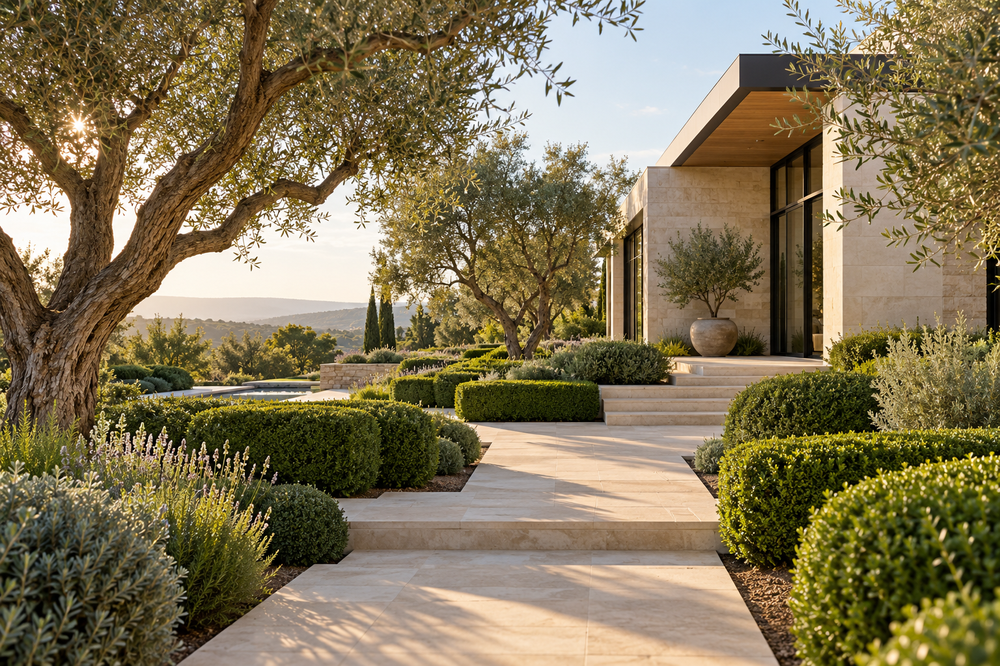

Tell us what you need.
Share your business, your current website, and what you want to improve.
A clear, mobile-friendly website that shows what you do and makes getting in touch simple. Work directly with Anthony on the design, words, and launch.

Open a working demo, explore the page, and try it on your phone. These are fictional concepts that show the kind of site we can build—not client results.
A calm, image-led layout for services and project inquiries. Open demo ↗
A bold service page with a clear next step. Open demo ↗
 FOOD & HOSPITALITY · CONCEPT
FOOD & HOSPITALITY · CONCEPTA warm visual identity with room for event inquiries. Open demo ↗
Design examples for fictional businesses, with AI-generated imagery. Your website will use content and images you approve.
You don't need to choose between three packages before we talk. Start with the essentials, then add what your business needs.
A focused landing page for a small business that wants a professional place to send potential customers.
Ask about a starter site ↗A written quote confirms price, timeline, and scope before work begins. Domain, hosting, and any ongoing services are itemized separately.
Need more? We can scope additional pages, booking-tool connections, or an automation around your existing tools. No need to buy those before you need them.
Share your business, your current website, and what you want to improve.
We’ll outline the design direction, deliverables, timeline, and custom price.
Review the build, test the agreed features, and get the instructions you need to manage it.
Send Anthony your current website (if you have one) and the one thing you want it to do better. You’ll discuss the fit and next steps before any project commitment.
Prefer a direct email?
anthonyalfano157@gmail.com
No. The three example sites are fictional design concepts with AI-generated imagery. They demonstrate design and layout, not client endorsements or business results.
No. NextDay Digital is the brand name. Your proposal sets a realistic timeline based on the scope, content, and revisions.
Send a short description of what you need. Anthony will outline the work and provide a written quote, including any ongoing costs, before you decide.
No. Tell us about your business, services, and goals. We’ll guide the design decisions, explain what we need from you, and handle the technical build.
Start with the information you have. We’ll identify what’s missing and include any writing or content work in your proposal. You review and approve the final content.
Yes. Send us the link and what you’d like to improve. We’ll assess whether to update the existing site or recommend a rebuild.
Common projects include inquiry routing, appointment confirmations, customer record updates, and follow-up reminders. We’ll check what your tools support before recommending a solution.
Your proposal will specify the files, accounts, and access included in the handoff, along with any third-party licenses. Domain and service accounts should be in your name.
We’ll include a timeline in your proposal based on the work involved and when your content is ready.